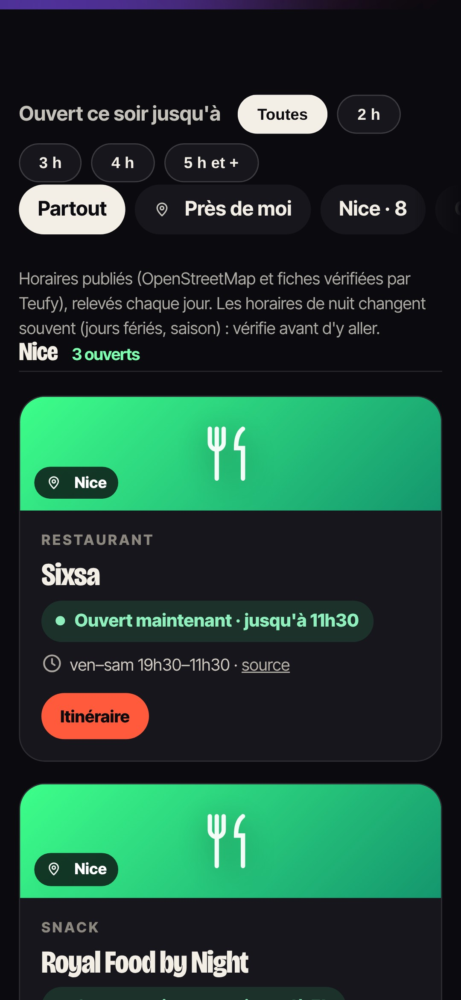
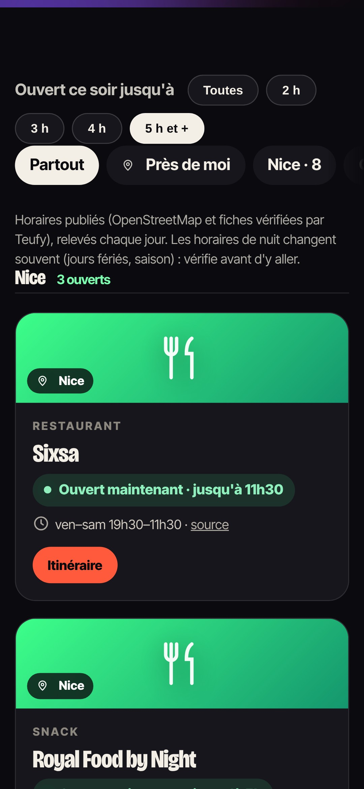
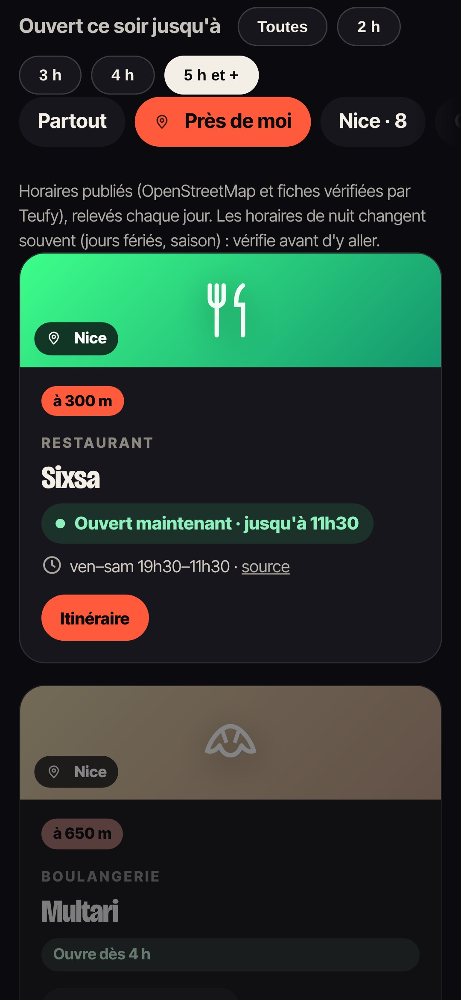
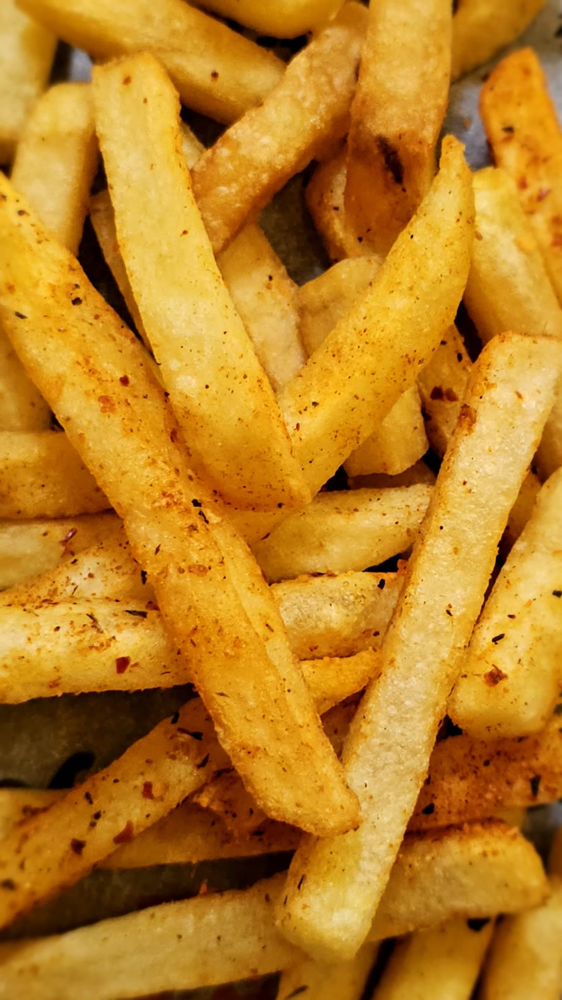

samedi
03:5904:00
POV
Y
Groupe « Soirée »
Yanis : ça ferme là
maintenant
I
Inès
jsuis morte de faim
maintenant
S
Groupe « Soirée »
Sami : ON MANGE OÙ ???
maintenant
T'AS LA DALLE


KEBAB ?
PIZZA ?
BURGER ?



ouvert jusqu'à
5 h et +
le plus proche
300 m

De Toulon
à Menton
à Menton
Manger tard
|
@teufy_official
S'abonner